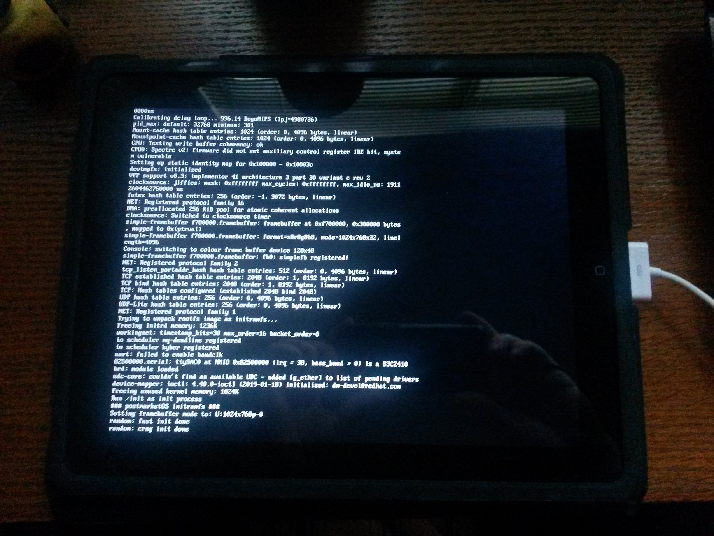

Apple iPad 1G (apple-ipad1g)
Jump to navigation
Jump to search
|
 TTY on iPad | |
| Manufacturer | Apple |
|---|---|
| Name | iPad (1G) |
| Codename | apple-ipad1g |
| Released | 2010 |
| Category | testing |
| Original software | iOS |
| Original version | 3.2 |
| postmarketOS kernel | 5.3.0-rc6 |
| Hardware | |
| Chipset | Apple A4 |
| CPU | 1x 1 GHz Cortex-A8 |
| GPU | PowerVR SGX535 |
| Display | 1024x768 |
| Storage | 16/32/64 GB |
| Memory | 256 MB |
| Architecture | armv7 |
| Type | handset |
{kind=link}
This device has been tested with postmarketOS, but its device package has not yet been added to the postmarketOS repositories.
This means that it cannot be selected in pmbootstrap.
Status: Can boot into a mainline linux kernel, but the bootloader isn't persistent so it can only boot tethered.
This means that it cannot be selected in pmbootstrap.
Status: Can boot into a mainline linux kernel, but the bootloader isn't persistent so it can only boot tethered.
| USB Networking |
Broken
|
|---|---|
| Flashing |
Partial
|
| Touchscreen |
Broken
|
| Display |
Partial
|
| WiFi |
Broken
|
| FDE | |
| Mainline |
Works
|
| Battery | |
| 3D Acceleration |
Broken
|
| Audio | |
| Bluetooth | |
| Camera |
Unavailable
|
| GPS |
Unavailable
|
| Mobile data | |
| SMS |
Unavailable
|
| Calls |
Unavailable
|
| USB OTG | |
| NFC | |
| Accelerometer | |
|---|---|
| Magnetometer | |
| Ambient Light | |
| Proximity | |
| Hall Effect | |
| Barometer | |
| Power Sensor | |
| Camera Flash | |
|---|---|
| Keyboard | |
| Touchpad | |
| USB-A | |
| HDMI/DP | |
| Ir TX | |
| Ir RX | |
| Stylus | |
| Haptics | |
| Ethernet | |
| FOSS bootloader | |
Contributors
- scintill
Device Owners
- BlackEyedSquid (Notes: 16GB, boot-loop issue - dead battery)
- ByteXD23! (Notes: 16GB, boot-loop issue, dead battery)
- KQuote03
- Little-miss-synth (Notes: own 4 examples, 1 16gb, 1 32gb with cracked digitiser, 1 32gb without damage and one 64gb cellular unit)
- Maxnet
- Meowking (Notes: Cracked screen, fully usable)
- Schrmh
- UltrasonicMadness (Notes: Does not power on, has a significant dent on it)
- ULumia (Notes: 3G 64 GB)
Booting
- Install syringe package in chroot:
pmbootstrap chroot --add syringe - Enter DFU mode (hold Power and Home with USB connected to computer)
- load openiboot
$ loadibec openiboot-ipad1g.bin
expect script for automating booting with oibc:
#!/usr/bin/expect
spawn oibc
send "!/path/to/vmlinuz\r"
sleep 0.1
send "\r"
expect "Received file"
send "kernel \"console=tty0 PMOS_NO_OUTPUT_REDIRECT\"\r"
expect "Done: kernel"
send "!/path/to/initramfs\r"
sleep 0.1
send "\r"
expect "Received file"
send "initrd\r"
expect "Done: initrd"
send "wait_boot 15000\r"
expect "Done: boot"- Set
console=ttySAC0for UART console instead of framebuffer -
earlycon=s3c2410,0x82500000andkeep_bootconmay be useful too.
Links
- openiboot (Great info on wiki)
- iDroid-kernel (older iDroid kernel with ipad support)
- Another fork of the iDroid kernel with more complete A4 support
- scintill/pmaports#1 (tracking issue)
- iPad Linux This page is a little collection of Linux on the iPad
- Project Sandcastle those awesome guys brought some little support for Android on iPhone 7/7+ and iPod touch 7G.
- prebuilt binaries for openiboot